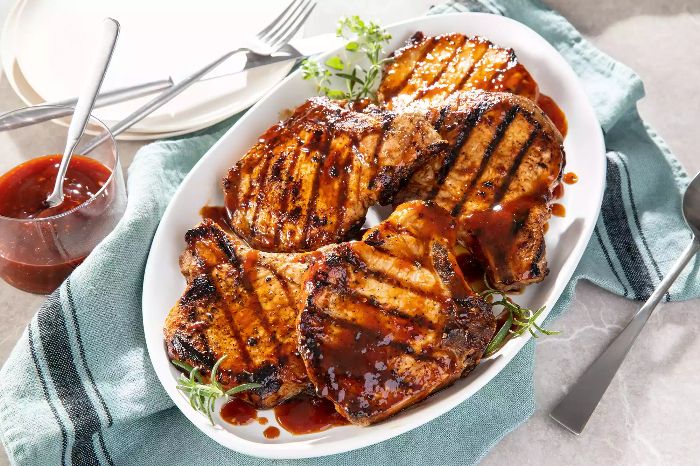

Worlds Best Honey Garlic Pork Chops

The very best honey garlic pork chops ever to be made
Ingredients
- 1/2 cup ketchup
- 2 2/3 tablespoons honey
- 2 tablespoons soy sauce
- 2 cloves garlic
- 6 pork chops
Steps
- preheat grill for medium heat and lightly oil the grate
- whisk the ketchup, honey, soy sauce and garlic together in a bowl and make a glaze
- sear the pork chops on both sides, lightly brush the glaze on each side, grill until no longer pink around 9 mins
Back Home